I. Introduction
The Daly City Youth Health Center (DCYHC) is a non-profit organization dedicated to providing their local community’s low income and at-risk youth ages 12-24 with primary health care at low or no cost. They serve over 3000 people in Daly City, San Mateo, and the surrounding regions of northern California.
I was brought in as a UX designer, in a team of two other designers, to focus on improving their main external website. My role was to do 3 main things:
1. Conduct user research and ideate to find ways to improve the user experience of their website
2. Design a new version of their entire website that applies those solutions
3. Implement that design in their official Squarespace website
I collaborated with my teammates to discuss research, brainstorm ideas, and split up the work for the designing and implementation processes. We worked together in ensuring a consistent style and helpful changes throughout the website.
I used Figma to design lo-fi and hi-fi wireframes, and Squarespace to implement the final prototype. During the research and ideation phase, we utilized extensive internal testing to find every little detail that could be improved. We also had frequent conversations with the organization to get feedback and new directions of research.
At the end, we updated their official external website to be easier to use, more visually consistent, and more accessible for their low-income clients.
II. Research & Ideation
The bulk of our research was from internal testing, as the old website was already published and the organization wanted us to keep similar themes and information to minimize the transition for their clients. We spent extensive time going through every page of the website together, discussing our thoughts and brainstorming ideas.
First, we started with the home page. After testing, we had some main takeaways:
• The header is confusing
• The page is very long and unorganized
• There is some redundant information
• There is not much call to action
• Some images are low quality
• Several features do not work
From this, we developed solutions:
• Reduce the number of links in the header
• Reduce excessive white space in between sections
• Combine sections with redundant information
• Move sections to other pages
• Add donation buttons towards the top
• Change images to be more recent and larger resolution
• Fix the broken buttons and links with guidance from the organization on what they are supposed to do
Next, we looked at issues with the health services page:
• There isn’t much description of specific health services
• The clinic store hours are very confusing
• There is redundant information
• There is no information how to get to the physical clinic
• There are large blocks of text
We came up with some potential solutions:
• Add a description for each specific health service
• Change the format of the clinic store hours and condense
• Remove unnecessary sections and text
• Add directions and address of the physical clinic, and encourage them to go
• Add more images to break up large blocks of text
Then, we continued with the rest of the pages, and took more notes on issues and solutions. However, we saw the same themes come up time and time again.
First, redundant information: there was significant overlap between pages and sections, which made the website longer and more complex than it needed to be. Second, confusing and unorganized information: formats changed constantly throughout pages and there was little organization or indication on where to find specific information. Third, outdated or incorrect information: images were old, some pages were not updated to the same visual style as the rest, and some buttons and links were not functional. Fourth, not enough call to action: the website’s main purpose was to get clients to take action such as donate or visit their clinic, and there was not much indication of this.
We decided to focus on these four themes throughout the whole website, taking steps to address these big issues that make the website hard to use for clients.
Next, we performed internal A/B testing. Because most of the individual changes at this stage were small, we were able to effectively test them by changing one at a time and comparing results. The majority of the changes were connected to one of the four themes we established earlier, and we measured their success by determining if it made the website clearer, easier to understand, more functional, or better serve their purpose. From this stage, we got a better understanding of what changes worked and what didn’t, and at the end we had a long list of changes to implement in the actual design.
Finally, we had to research the parts of the website that do work, and should not be changed in our redesign. We determined that the color theme of blue and orange was important to keep, because it was essential to their brand identity. Additionally, the detailed text information about their clinic was crucial to keep due to it providing the foundation of the website’s whole purpose, which is to assist clients who go to their physical clinic. Lastly, people are a very important part of the organization's whole mission and purpose; therefore, we needed to keep all the human testimonials and experience descriptions, maintaining the humanitarian side of the website and organization.
III. Wireframes
At this point, we split up the designing work, while still maintaining a consistent style and conferring with each other frequently. I was responsible for the entirety of the home page, which consisted of a significant amount of information and actions. Based on our research and ideation, I decided to split it up into 5 sections:
• The header and main statement
• An overview and description of services
• An impact statement
• A donation call to action
• Helpful links for community members
At this stage, I made wireframes for each of these sections separately, but later I combined them all into the one complete smooth page.
I began with low fidelity wireframes, focusing on content and layout. First was the header and main statement section.
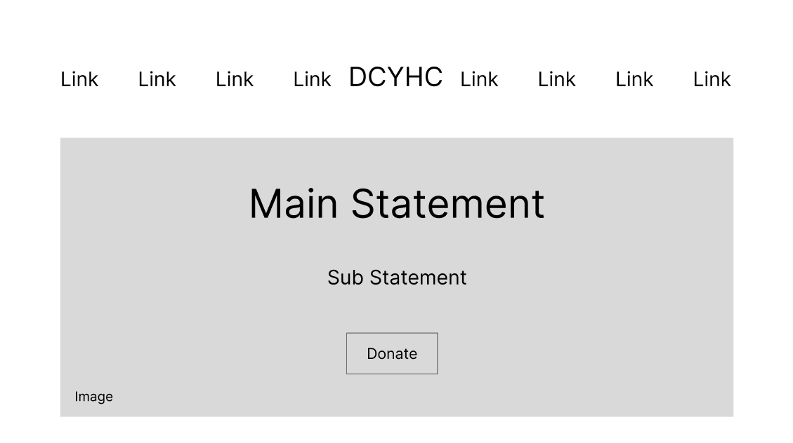
Lo-fi wireframe of the header and main statement section.
Based on our previous insights, images, especially of real people, were incredibly important in the website because of the humanitarian nature of the work the organization does. That is why, right at the top of the home page in this section, I included a large image background, which I intended to be a group photo of the clinic patients. Additionally, the donate button being featured here caters to another thought we had; we need more call to action. Finally, the header itself was just one row of links, as compared to the two rows of links the old version had. This makes it much easier to navigate and find information.
Next, the overview and description of services.
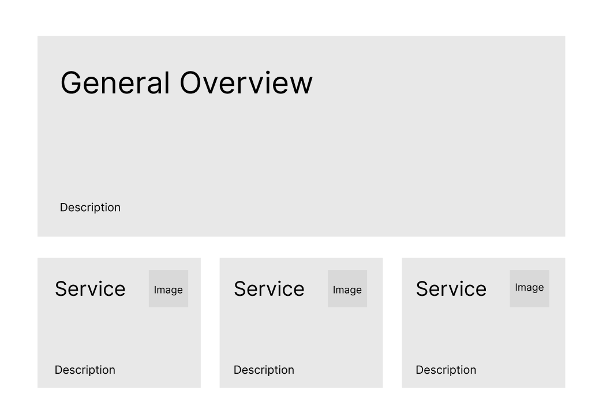
Lo-fi wireframe of the overview and description of services section.
The general overview and description text provide the foundational information about the clinic itself. In the old version, this was buried much farther down and was less clear. Also, the three box format for the description of services provides quick access to multiple important pieces of information, and utilizes space more efficiently.
Next was the impact statement.
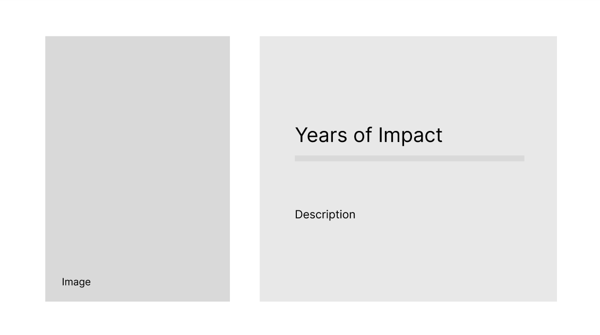
Lo-fi wireframe of the impact statement section.
Highlighting the actual number of years the organization has been helping the community, serves to promote their cause and build trust in the potential clients. Upon meeting with the organization, we found out the number was 34, which is impressive and shows the resiliency and effectiveness of the organization. And once again, it features a large image to the side, focusing on the human aspect and not just statistics.
Next, I made the donation call to action section.
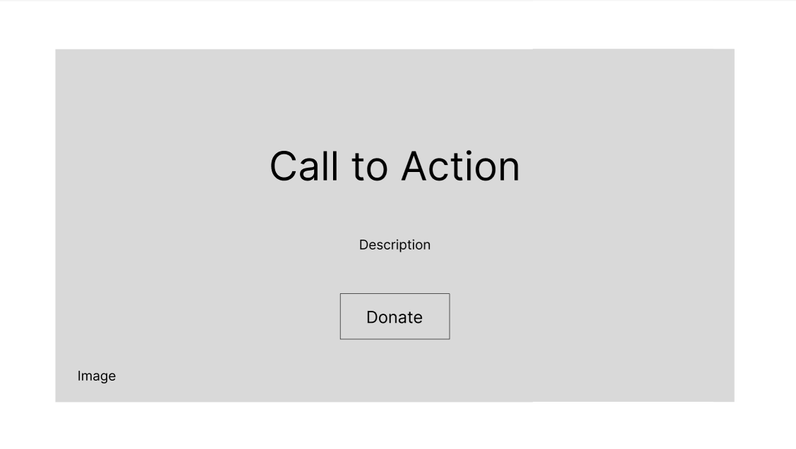
Lo-fi wireframe of the donation call to action section.
As stated previously, one of our goals was to increase the call to action to turn visitors into beneficiaries for the organization. This is the second donate button on the home page, the first being featured right at the top. Assuming they scrolled past that, this is a stronger reminder of how important the organization’s work is in helping vulnerable youth, and the large image banner further drives the emotional appeal.
Finally, I made the helpful links section.
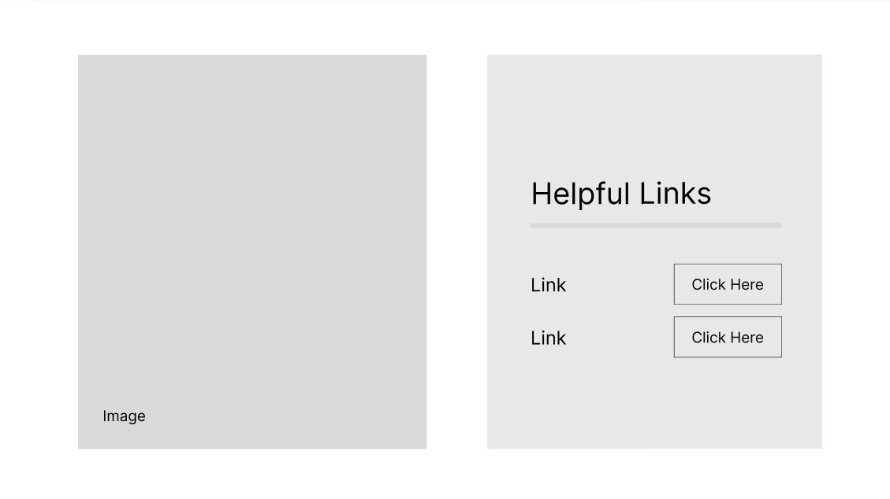
Lo-fi wireframe of the helpful links section.
This section helps provide quick access to useful links for community members, not just clients. It emphasizes the community-serving goal of the organization, and features yet another large image to solidify the human appeal. In the old version, the links were much harder to find, so I focused on making them easy to see.
After I, and the rest of my team who made lo-fi designs for the other pages, went through this process, we moved on to high fidelity wireframing. I did the same set of sections on the home page, working on synthesizing my lo-fi layouts, the solutions we researched earlier, and the existing elements we wanted to keep from the old version.
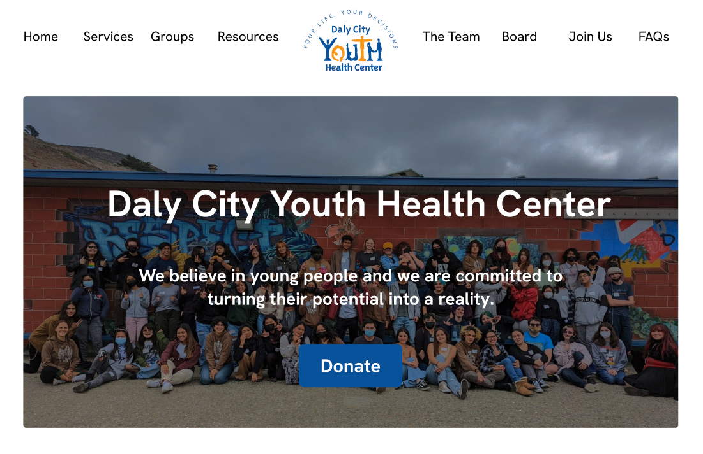
Hi-fi wireframe of the header and main statement section.
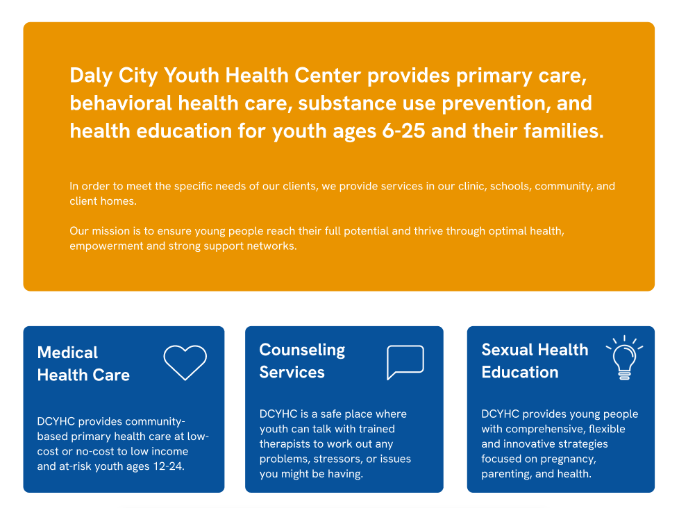
Hi-fi wireframe of the overview and description of services section.
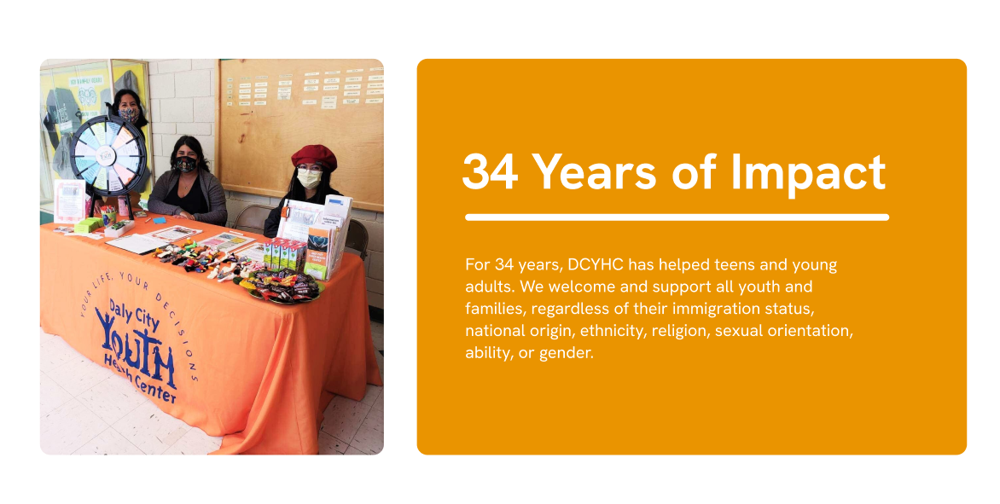
Hi-fi wireframe of the impact statement section.

Hi-fi wireframe of the donation call to action section.
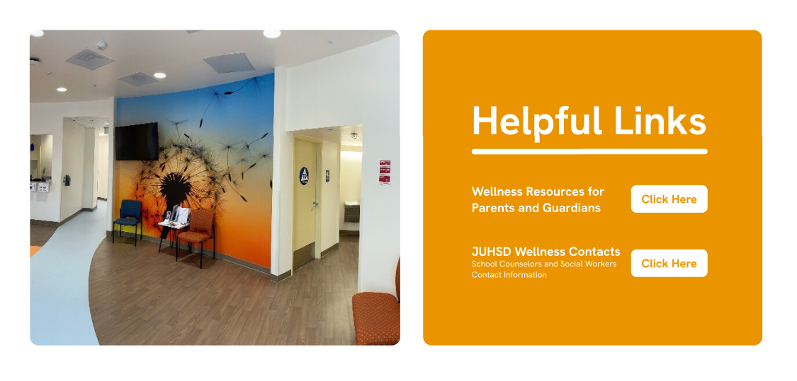
Hi-fi wireframe of the helpful links section.
Here are some key aspects of these designs:
• The color theme of orange and blue was important to maintain from the original and emphasize, and can be seen throughout these sections
• The frequent use of images containing real people displays the humanitarian mission of the organization
• Although the general style is constant, there is variation in the specific format of the different sections to make the page feel more interesting
• The sections smoothly encapsulate different aspects of the organization and present all the information necessary, but in a simpler, easier to understand, and less redundant format than the old version
IV. Final Prototype
We combined all of our ideas and designs into the implementation of the final prototype. We worked on editing the organization’s official Squarespace website.
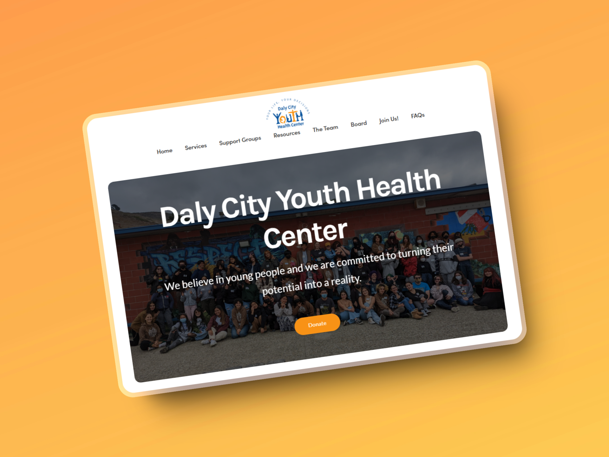
Header and main statement section.
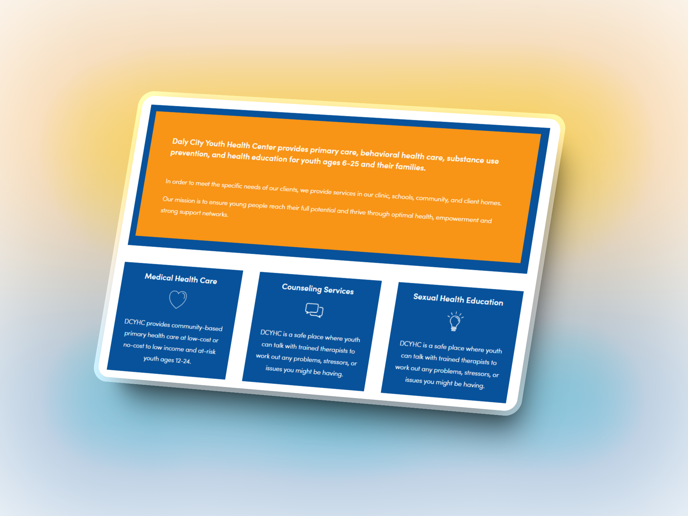
Overview and description of services section.
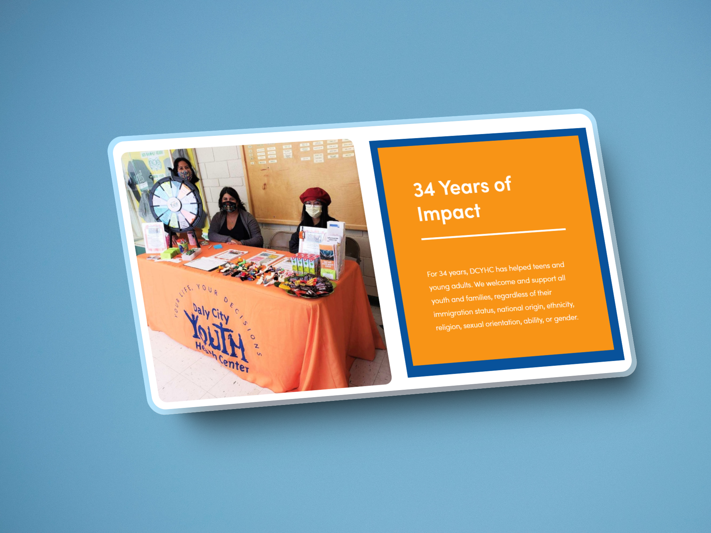
Impact statement section.

Donation call to action section.
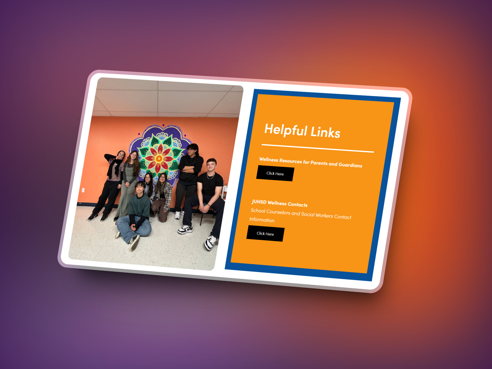
Helpful links section.
While it is very similar to our hi-fi wireframes, there are a few small differences:
• I made the action buttons orange instead of blue to be more noticeable
• I added blue highlights on orange background boxes throughout to further emphasize the dual theme of blue and orange
• I changed the format of the 3 services boxes to be more sequential
• The helpful link buttons have black backgrounds to provide more contrast
This prototype was published to their official website.
V. Outcomes
In the end, we accomplished the three main tasks established at the beginning: research ways to improve the website, redesign a new version based on the solutions, and then implement the changes in their published Squarespace website.
I learned a lot about the power of different appeals through design. We used images of people to highlight the human side, years of impact to emphasize experience and resilience, helpful links to show the community impact of the organization and more. Using these aspects effectively can build an image of the product or organization you are representing through the design, and I got a lot of experience working with these ideas through this project. Additionally, I made significant improvements in my research, ideation, wireframing, designing, and prototyping skills, as well as my ability to use Figma and Squarespace.
Through our work, we were able to assist an organization that helps people, and our design will be seen by many across their community.